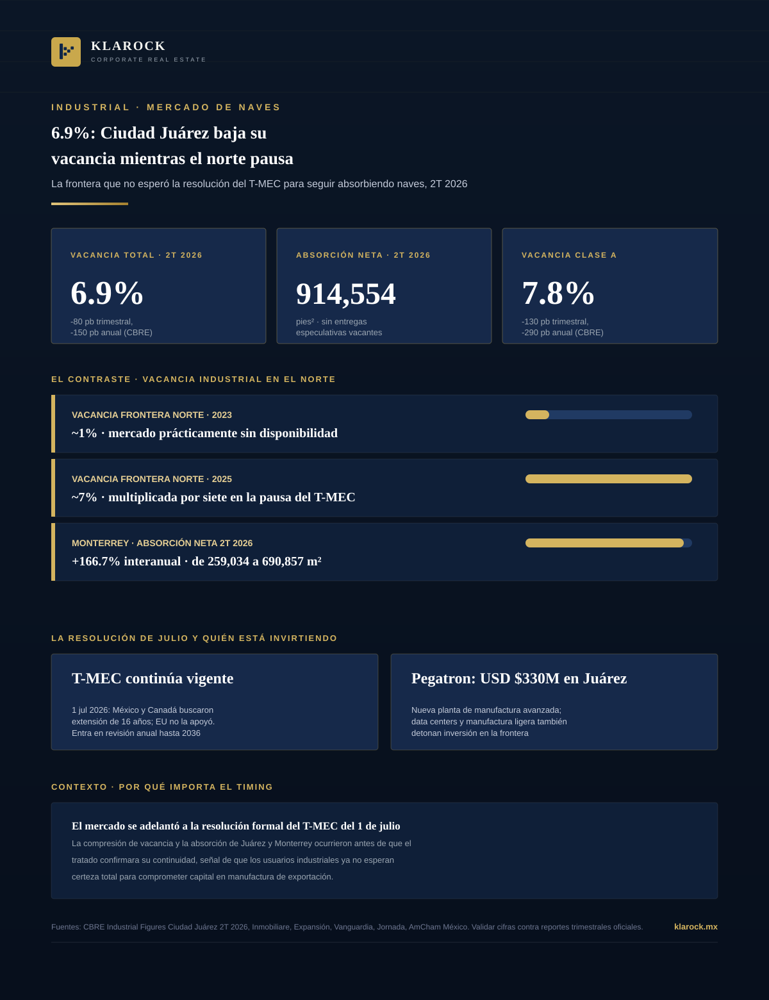

Industrial · 2026-10-01
Mientras la incertidumbre por la revisión del T-MEC multiplicaba por siete la vacancia industrial en la frontera norte entre 2023 y 2025, Ciudad Juárez cerró el segundo trimestre de 2026 en sentido contrario: 6.9% de vacancia total, 914,554 pies² de absorción neta y cero entregas especulativas vacantes. El mercado no esperó a que el tratado se resolviera para seguir absorbiendo naves.

Durante 2025, la narrativa dominante del mercado industrial fronterizo era de pausa: la incertidumbre sobre la revisión conjunta del T-MEC, programada para julio de 2026, llevó a usuarios industriales a posponer decisiones de inversión, y la vacancia en el norte del país se multiplicó por siete frente a los niveles casi nulos de 2023. Pero Ciudad Juárez no siguió ese guion. Según el reporte Industrial Figures de CBRE para el segundo trimestre de 2026, el mercado fronterizo cerró con compresión de vacancia y absorción neta sólida —antes, no después, de que el tratado confirmara su continuidad.
El dato más relevante no es solo que Juárez comprimió vacancia: es que lo hizo antes de que el T-MEC confirmara su continuidad. Eso sugiere que los usuarios de manufactura de exportación ya no esperan certeza regulatoria total para comprometer capital —sobre todo cuando compiten por espacio Clase A en un mercado sin entregas especulativas vacantes. Con el tratado vigente pero sujeto a revisión anual, la ventana para asegurar condiciones favorables en naves Clase A de la frontera norte se estrecha cada trimestre que la absorción se mantiene por encima de la oferta nueva.
En Klarock damos seguimiento al ciclo industrial de la frontera norte —vacancia, absorción y pipeline de construcción por mercado— para identificar cuándo conviene asegurar espacio antes de que la compresión se acelere.
Escríbenos y un socio director te contactará en menos de 24 horas hábiles.
Contactar a un Socio Director